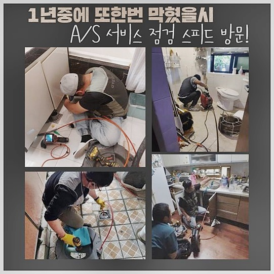
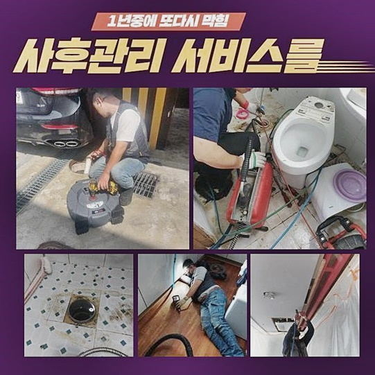
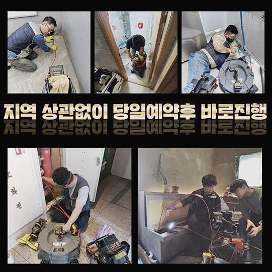
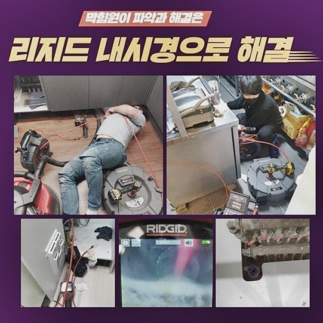
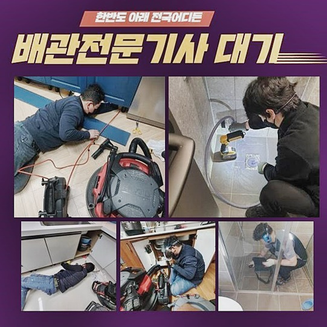
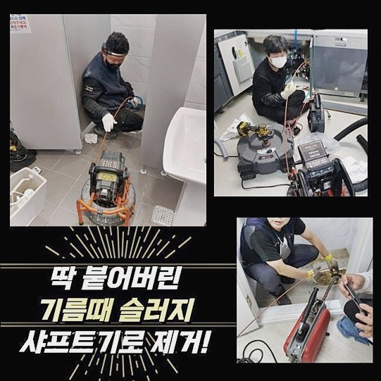
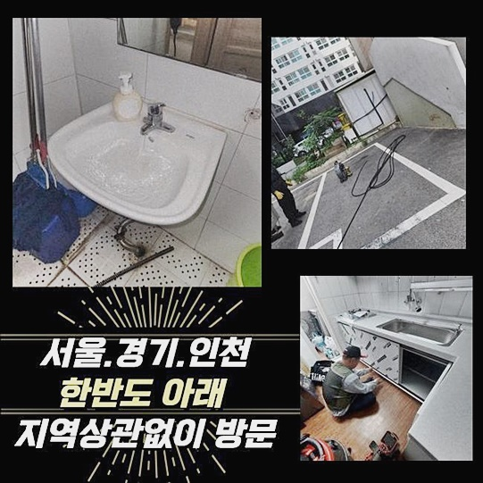

🏠 부천 원종동대변기뚫음 오정동 고압세척비용 설비출장
용인 변기막힘 전문 시공 후기

📋 작업 개요
- 위치: 용인
- 서비스 유형: 변기막힘, 배관막힘, 맨홀막힘, 누수수리, 역류해결, 뚫는업체, 배관청소, 고압세척
- 작업 일시: 2024. 9. 17. 13:38
- 업체명: 하수구수사대 (010-5615-2118)
🔍 문제 상황
부천 원종동대변기뚫음 오정동 고압세척비용 설비출장
배관고장이 나타나면 다각적으로 애로 사항이 등장하게 되는데요
수도사용이 안되므로 주방시설물 이용을 못하게 됨은 당연하고 화장실도 사용하기 힘들게 돼버리는 경우도 있겠죠
위에서 언급한 내용은 몇시간 정도만 이용이 불가해도 커다란 고통을 유발할수 있어요
거기에 더해 해당되는 문제가 주변 주민들에게 누를 끼치는 경우도 허다하죠
그렇게 된다면 예상을 뛰어넘는 금전보상이 생겨나기도 한답니다
그러하기에 배수관정체가 발현됐다면 고민치마시고 곧바로 점검 가능한 기술자를 수소문해서 해결보셔야 해요
배관수리를 셀프로 진행해보고자 판단한 후 용감하게 고쳐보려하지만 그렇게 수월치 않아요
그런식으로 다루시다가 외려 파이프에 쇼크를 주며 누수증세가 나타나거나 인접 설비가 고장나면서 예상치 못한 수리로 지출내역이 커질수도 있답니다
연초에 출장간 처소의 의뢰자께선 부적절하게 뚫음을 속행하다가 누설 수리까지 이어진 상황도 있었답니다
공연히 고집을 부리시다가 사태가 심각해질수 있으므로 사태가 비경한 것으로 판단된다면 기술자를 수소문해서 수리하시는게 바람직합니다
해당 처소는 1층주택이었고 촉급하게 전화를 받은뒤에 내방갔답니다
의뢰자께서 세컨 하우스로 쓰신다고 했으며 1층 창고옆에 트러블이 일어났다고 하셨어요
이쪽에 들어오지도 않았으며 7일만에 들어와 보았더니 물이 역류중이라 무지 당황하신 상태였죠
의뢰자께 어디에선가 폐쇄현상이 발발한걸로 보인다고 이야기하였더니 시간이 얼마나 발생되는지 궁금해하셔서 일목요연하게 말씀해드렸으며 즉시 고쳐달라고 말하셔서 업무를 시작하게 되었죠

🔎 원인 분석
💡 전문가 진단: 정밀 진단 장비를 사용하여 슬러지의 고착 여부를 판명하고 타격/세척 작업을 실시했습니다.
배관파이프 방면으로 숙지해야될 사안은 막힘현상은 상부층에서도 일어나고 배수구조에 의해 하층부에서 먼저 파열되면서도 일어난다는 거죠
그렇기에 사태를 추정하여 수리해서는 긍정적인 성과를 얻기 힘들죠
따라서 정밀하게 문제를 점검하고 방책을 마련해야 한답니다
그저 구멍을 낸다고 처리되는게 아니랍니다
잘못되면 상관없는 위치에 작업하여 몇주 못가서 재차 배관수선 업무를 해야 할 수 있답니다
그렇기에 자세한 조사가 요망되는거죠
우리팀은 보유한 배관카메라를 이용해서 상황이 어떠한지 파악하였어요
첫느낌으론 유분이라 느껴져서 질문하니 열흘전 쯤 식기세척을 진행할때에 그대로 쏟아버리셨다고 말하셨어요
우리팀은 그게 막힘문제의 주된 이유라고 추측할수 있었죠
의뢰자께서는 으레 기름성분은 흐름성이 좋으며 끓인 물을 사용해서 세정했기에 문제가 생기지 않을거라 여기셨다고 말했어요
대부분이 기름성분은 배관에 넣는다고 해도 물과 함께 내려갈거라 생각하시는데요
이것은 실제와 간극이 크며 도리어 정체의 상황을 촉발합니다
기름기는 아시는것처럼 200도 가까이에서 유동성을 갖죠
하지만 그것이 상온에서는 단단하게 고체가됩니다
그것들이 잔존하면서 기타 잔재들과 섞이며 점진적으로 크기게 커지고 말미에는 관로를 가로막기 때문에 이런 식으로 역류가 일어나는 거예요

🔧 작업 과정
그렇기에 금번 현장과 같이 배관클리닝을 피하고 싶으시다면 평소 찌꺼기들을 하수관으로 버리시지 않는것이 좋아요
이곳의 고객님께도 이런 사안을 이야기하였더니 조심해야 하겠다고 말하시더라고요
틈틈이 내시경cctv로 조사하면서 노폐물들이 똑바로 소제되는지 파악하였죠
물론 이런 식으로 기름성분이 축적되었다고 자동적으로 배관막힘이 생기는 것은 아니예요
갖가지 슬러지들이 누증되면서 기름성분들과 뭉쳐져서 정체가 생기는 거예요
뜨거운 수돗물을 정기적으로 사용하여 장애를 막는것도 생각할수 있지만 원천적인 수습은 된다고 보기 어려워요
또 희석제도 관로에 끈끈하게 접착된 고형물을 깨끗이 처치하긴 어렵답니다
그리고 플렉스샤프트 도구를 가동시켜 끈끈해진 기름기를 털어냈고 그밖에 내부에 잔류하는 물휴지 덩어리와 소석회 물질들까지 처리하였어요
수년간 누증된 이물질이 엄청나다는걸 인지하게 되었어요
촬영기기를 살피면서 꼼꼼히 정체문제를 해소시키고 났더니 배관으로 수돗물이 조금씩 사라졌는데 예상처럼 깔끔히 통수가 사실상 안된답니다
이것은 밖의 맨홀부근에도 트러블이 발현되었다는 증거였어요
가정 안에서 처리할 일들은 끝냈으니 바깥쪽만 처치하면 될것으로 보였죠
의뢰자께 해당 내용을 안내드렸고 외부로 이동하여 맨홀덮개를 오픈하고 점검해 봅니다
저희 예측대로 내측에 침전물이 엄청나게 많았죠
공간을 마련한 다음 물청소 기계를 가동하여 재빠르게 소쇄하였답니다
그나마 실내에서 소제하였기에 신속하게 마감되었답니다
이제서야 관이 개방되면서 빠르게 소멸되는 모습을 목견할수가 있었답니다
이물이 토출되지 않을때까지 계속 고압청소로 소제하였고 10분가량 흐른 뒤에 투명한 상수도물이 방출되었답니다
깨끗한 수돗물이 나와야 안에 슬러지가 소거되었단 걸 뜻하므로 필수적인 과정입니다
기름불순물도 해당되는 방책으로 깔끔하게 처치했답니다
이것들은 맨 나중에 배출된 노폐물인데 해당되는 성분들 밖에도 많은 슬러지들이 처리되었어요
관로를 금번에 작업하며 다시금 지속적인 검열은 당연하고 평상적으로 이용을 제대로 해야 된다는 내용을 파악했고 그 내용을 고객께도 안내해 드렸죠
의뢰인분도 찌꺼기만 가볍게 걷어내면 마감되는 걸로 아셨는데 정황이 커져서 놀라셨지만 해결된 걸 확인하시곤 안심하셨죠
앞으로는 늘상 이용하는 공간이 아니란 이유로 내버려두지 말고 정기적으로 클리닝을 해야하겠다고 다짐하셨어요


✅ 작업 완료
밖으로 배출된 찌꺼기들로 인해 오손된 부근을 정리해 주었죠
통상적으로 배관트러블이 일어나면 해당 업무만 시행한뒤에 마감된다고 여기실수 있지만 저흰 보시는바와 같이 뒷정리까지 완벽하게 이행하죠
게다가 주위의 시설에도 타격을 가하면 안되기에 그런 내용들도 철두철미하게 신경쓰고 있겠죠
의뢰자께서는 짜증나는 정황이었지만 우리들의 수리하는 모습을 목견하고는 흡족해하셨어요
저희들은 고장이 포착되었다면 휴일이라고 하여도 곧장 달려가 작업합니다
역류증세나 막힘 등은 될수 있는한 조속히 처리해야 정황이 심각해지지 않았죠




⚠️ 베란다 누수 및 방수 관리 방법
- ✅ 비가 많이 올 때 창틀 주변이나 아래층 천장에 얼룩이 생기는지 정기적으로 확인해 보세요.
- ✅ 우수관 주변 실리콘 마감이 들뜨거나 깨진 틈새가 있는지 손상 여부를 수시로 체크하세요.
- ✅ 베란다 바닥 타일의 줄눈(메지)이 소실되면 그 틈으로 물이 침투하여 누수가 유발됩니다.
- ✅ 누수 의심 증상 발견 시 방치하면 아래층 손실이 커지므로 즉시 전문가의 진단을 받으십시오.
💡 핵심 정리
- 확실한 장비 작업(내시경 점검 및 샤프트 스케일링)으로 원인을 뿌리 뽑습니다.
- 작업 후 1년 이내에 동일한 부위 재발 시 100% 무상 A/S 서비스를 보장합니다.
- 서울 · 경기 · 인천 전 지역에 24시간 언제든 긴급 출동할 수 있도록 항시 대기 중입니다.
❓ 자주 묻는 질문 (FAQ)
🚨 용인 변기막힘 문제로 고민이신가요?
정확한 원인 진단과 확실한 시공으로 재발 없는 해결을 약속드립니다.
24시간 긴급 출동 | 서울 · 경기 · 인천 전지역 | 1년 내 재발 시 무상 A/S